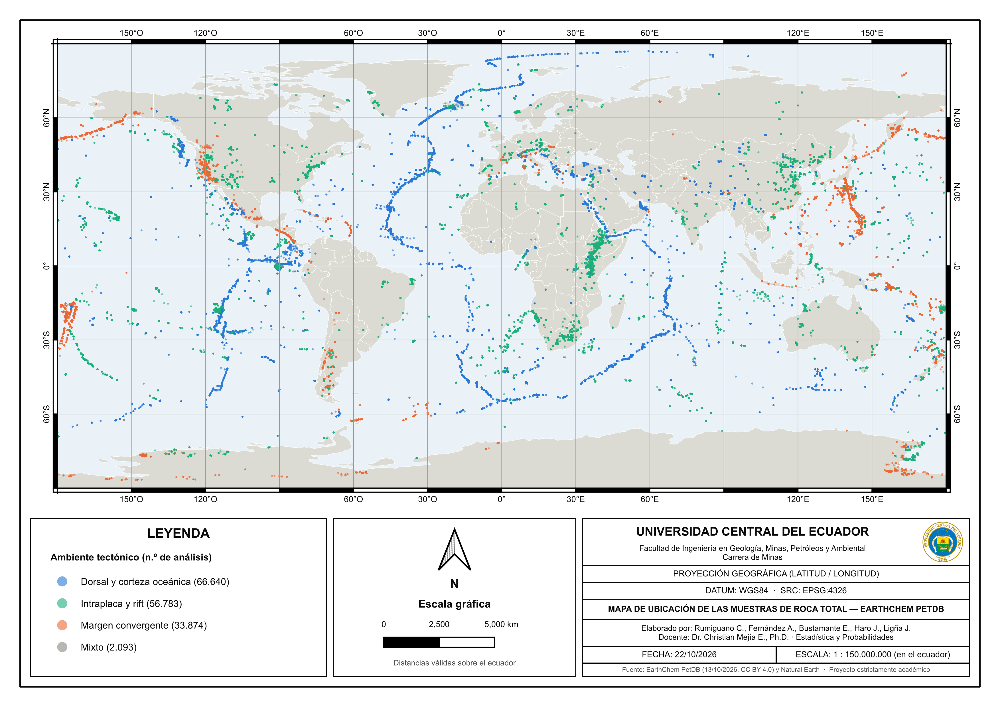
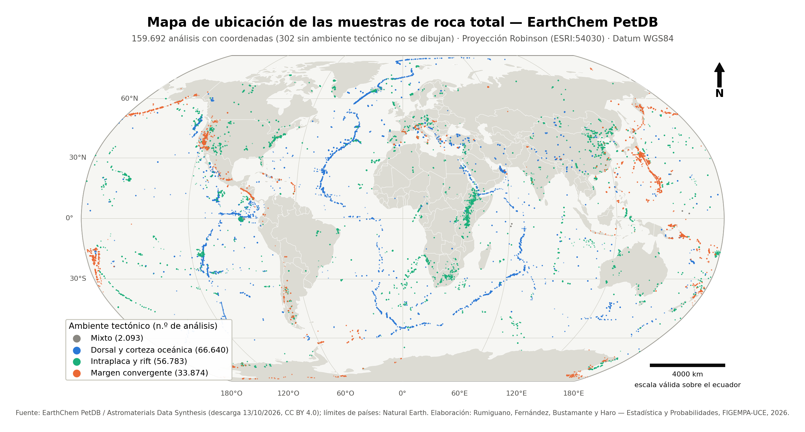
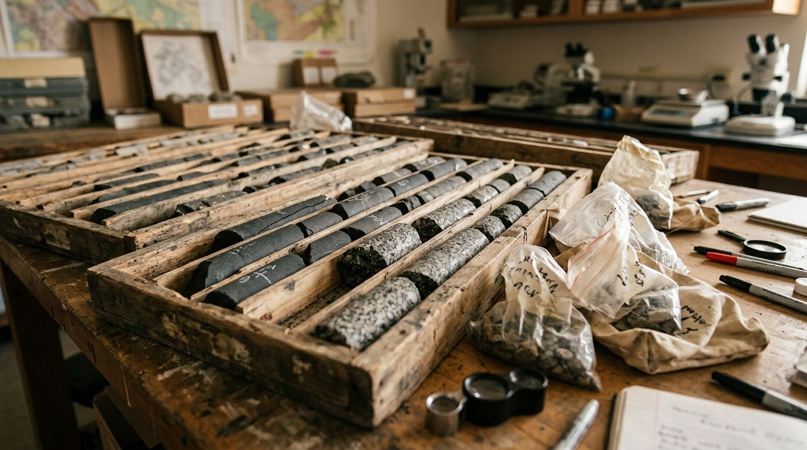
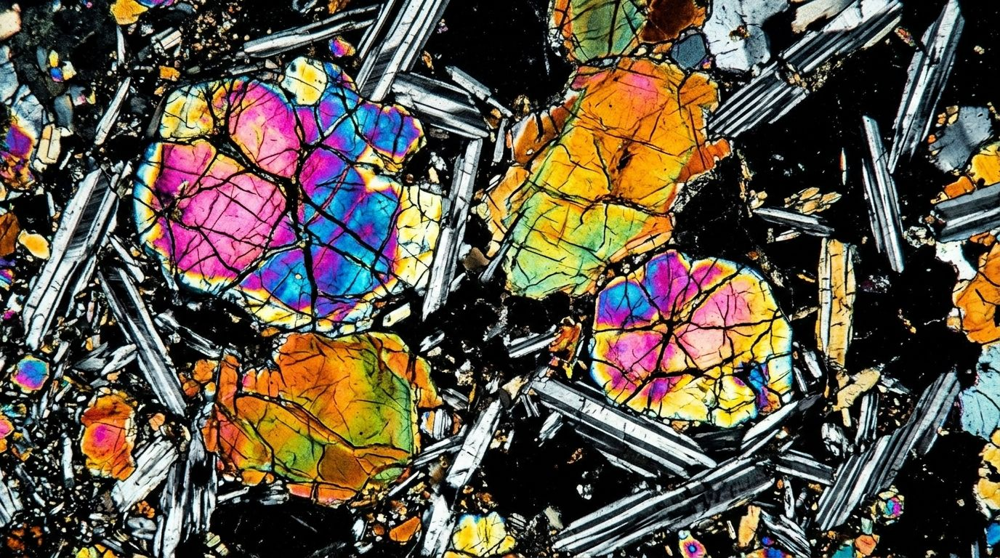

Planteamiento del problema

Casi un siglo de análisis químicos de rocas de todo el planeta, reunidos en una sola base de datos, como caso de estudio para aplicar la estadística a la geología.
EarthChem PetDB · 159.760 análisis
La composición química de una roca dice qué es y cómo se formó, y por eso orienta la exploración minera: las rocas ultramáficas alojan cromita y níquel, y los arcos volcánicos, como el de los Andes ecuatorianos, concentran pórfidos de cobre y depósitos de oro. Sin embargo, para saber si la composición de una muestra es normal o anómala hacen falta valores de referencia construidos con muchos datos, y esos datos están dispersos en miles de publicaciones, fueron medidos con métodos distintos y rara vez se analizan en conjunto. A eso se suma que las concentraciones químicas no forman una campana simétrica: tienen colas largas, valores atípicos y muchos datos faltantes, de modo que resumirlas exige elegir con cuidado las herramientas. La estadística permite hacerlo con tablas de frecuencia e indicadores, modelos de probabilidad, regresiones entre elementos y modelos que clasifiquen las rocas. Como caso de estudio se toma la base PetDB de EarthChem, que reúne 159.760 análisis de roca total publicados en más de dos mil artículos desde 1932, con 75 variables entre elementos mayores, traza y tierras raras, ubicación, tipo de roca y ambiente tectónico; como dos tercios de las muestras provienen del fondo oceánico, ese sesgo se considera a lo largo del análisis.
Mapa de ubicación
Las muestras cubren todos los continentes y océanos; cerca de dos tercios vienen del fondo oceánico. El mapa se elaboró en QGIS (coordenadas geográficas, datum WGS84) y en Python (geopandas, proyección Robinson).



Objetivos
Analizar estadísticamente la composición geoquímica de las rocas a nivel mundial para caracterizarla según el tipo de roca y el ambiente tectónico.

Describir
Describir la distribución de los elementos mayores, traza y tierras raras con tablas de frecuencia, gráficas e indicadores estadísticos.
Ver estadística descriptiva →
Modelar
Ajustar modelos de probabilidad e intervalos de confianza a las variables químicas y medir la relación entre elementos mediante regresión.
Ver inferencial y regresión →
Predecir
Predecir el ambiente tectónico de una roca a partir de su composición química con una red neuronal.
Ver machine learning →Recorrido del proyecto
Cada unidad del curso tiene su propia página, con los documentos de R y los notebooks de Colab.
Estadística descriptiva
Población y muestra, tabla de variables, tablas de frecuencia, gráficas, indicadores y tratamiento de outliers.
Estadística inferencial
Modelos binomial, geométrico, Poisson, normal, log-normal y exponencial, chi-cuadrado e intervalos de confianza.
Regresión
Seis modelos de regresión, serie de tiempo y estadística multivariable (componentes principales).
Machine learning
Redes neuronales de regresión y clasificación en Google Colab, con Optuna.
Documentos en RPubs
Todo el análisis en R, con código y resultados, publicado en rpubs.com/rosemeri.
Datos y fuente
De dónde salieron los datos, cómo se limpiaron, reporte en PDF y descargas.
Equipo
Estudiantes de Ingeniería en Minas y docente de la asignatura.
Tecnologías usadas
Software libre o gratuito: cualquiera puede repetir el proyecto. Todo el código, los datos limpios y los documentos están en el repositorio.
Estadística en R
Toda la estadística: tablas de frecuencia, modelos de probabilidad, regresiones.
Documentos con código y resultados (RPubs): rmarkdown, knitr, e1071, MASS, openxlsx.
Python y machine learning
Limpieza de la base, mapa, informes y la web.
Leer, limpiar y unir los 159.760 análisis.
Cálculo numérico.
División de datos, normalización, métricas y modelos de comparación.
Entrenamiento de las redes neuronales.
Arquitectura de las redes: capas densas, dropout, softmax.
Búsqueda automática de hiperparámetros.
Notebooks de la Unidad 4.
Ejecutar los notebooks en el navegador, sin instalar nada.
Mapas
Mapa de ubicación con cuadrícula, escala y membrete (PyQGIS).
Conversión de capas a shapefile.
Web y publicación
Estructura de las páginas, sin frameworks.
Diseño y tema oscuro.
Tablas, filtros y el botón «Código R».
Gráficos interactivos y el mapa en el navegador.
Repositorio con todo el código y los datos.
Publicación de esta web.